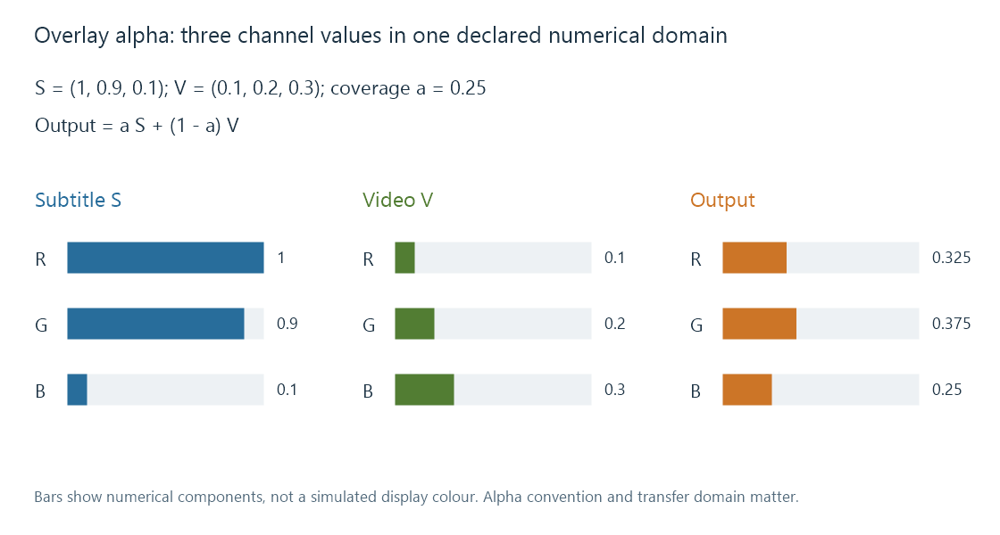

Subtitle overlay filtering
Subtitle overlay filtering synchronizes a current subtitle layer with video and blends its colour/coverage into the applicable picture geometry.
Overlay filtering combines the current subtitle presentation with a video picture. Its inputs must agree on time, geometry, format and the meaning of colour/alpha.
That task is different from recognizing speech, selecting a subtitle track or shaping its text. An overlay can receive correct pixels and still produce the wrong result if it interprets their coverage or placement incorrectly.
Alpha controls coverage
For straight-alpha colours expressed in one declared working domain, a simple opaque-video blend is:
output = alpha × subtitle + (1 − alpha) × video
Take subtitle colour (1,0.9,0.1), video colour (0.1,0.2,0.3) and alpha 0.25:
| Component | Calculation | Output |
|---|---|---|
| R | 0.25 × 1 + 0.75 × 0.1 | 0.325 |
| G | 0.25 × 0.9 + 0.75 × 0.2 | 0.375 |
| B | 0.25 × 0.1 + 0.75 × 0.3 | 0.250 |

This is a numerical blend model. It does not assert that every filter automatically converts its inputs into linear light or applies the same HDR colour policy.
At alpha 0 the video remains; at alpha 1 the subtitle covers it. Antialiased edges use intermediate coverage values.
Straight and premultiplied colour need different handling
In premultiplied form, the subtitle colour has already been multiplied by alpha. The equivalent blend adds that premultiplied colour to (1−alpha) times the video.
Multiplying it by alpha again darkens the subtitle edge. Treating unmultiplied colour as premultiplied can make another incorrect edge. A byte format called RGBA does not by itself establish which convention its values use.
The selected format also matters for subsampled YUV. Luma and chroma planes have different grids, and alpha/position calculations need the relevant plane relationship. A luma-coordinate displacement is not automatically the same numeric displacement on a half-resolution chroma plane.
Synchronize the layer with picture presentation
The subtitle event's lifetime is evaluated against picture PTS. Its packet arrival or decode time can be earlier.
A clear/empty presentation at the appropriate time is as meaningful as a nonempty layer. End-of-stream and repeated-frame policies must preserve the intended disappearance, rather than repeat the previous caption indefinitely.
The geometry includes source script/display planes and any crop/scale. Rendering establishes how that placement reaches the composition surface.
Native subtitle input and video-overlay input differ
In the pinned Emby FFmpeg 5.1-emby_2023_06_25_u1, overlaytextsubs accepts a main video input and a subtitle input, while overlaygraphicsubs handles graphical subtitle composition. The former invokes libass rendering before blending.
A generic overlay or hardware overlay filter instead works with video/image frames. A subtitle-to-video conversion can bridge that boundary.
Those are verified source interfaces of this dated build. A session's actual filter graph and compiled capabilities identify which form was used. The SDK processing-step descriptions express semantic roles, not a one-to-one guarantee of filter names.
See Also
- Subtitle burn-in
- Software subtitle overlay
- Subtitle overlay pipeline fundamentals
- Subtitle rendering